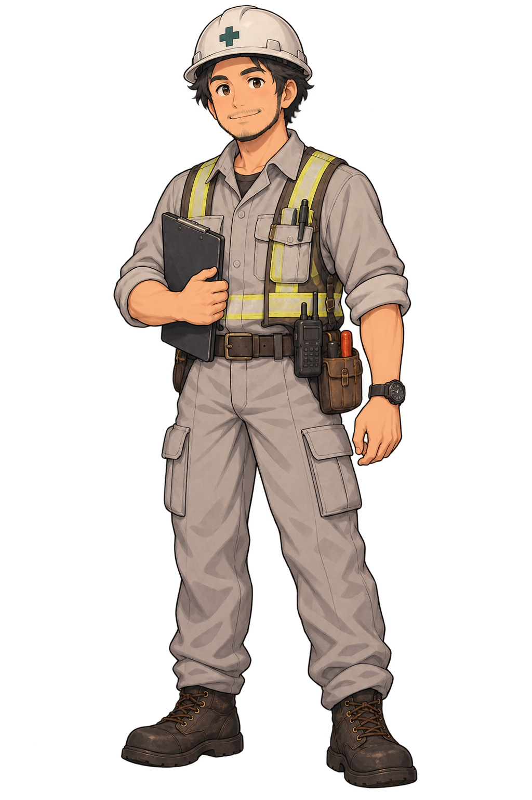

11:00 · ĐIỂM TẬP KẾT ĐỈNH ĐỒI AN TOÀN



CHƯƠNG THỨ NĂM · 11:00 TRƯA
Đỉnh đồi
Đỉnh đồi
An toàn
Vượt qua mọi thử thách sườn đồi và dòng nước lũ, đoàn học sinh và dân phòng đã hội tụ trọn vẹn tại Nhà văn hóa thôn.
Bàn giao thực địa cho Trưởng làng Minh Anh, vượt qua bài kiểm tra 5 chương và nhận Chứng Nhận Chiến Sĩ Nhí An Toàn.